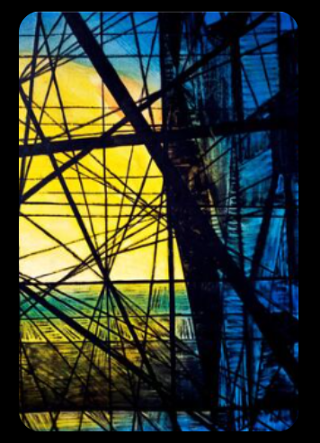

Afewerk Tekle whom you might not be familiar with is referred to as Maitre, which means master or expert, with good reason. His creations have been on display for many years all around the world. Along with paintings, he also created statues and stained glass. View some of his greatest works

